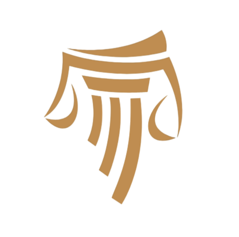
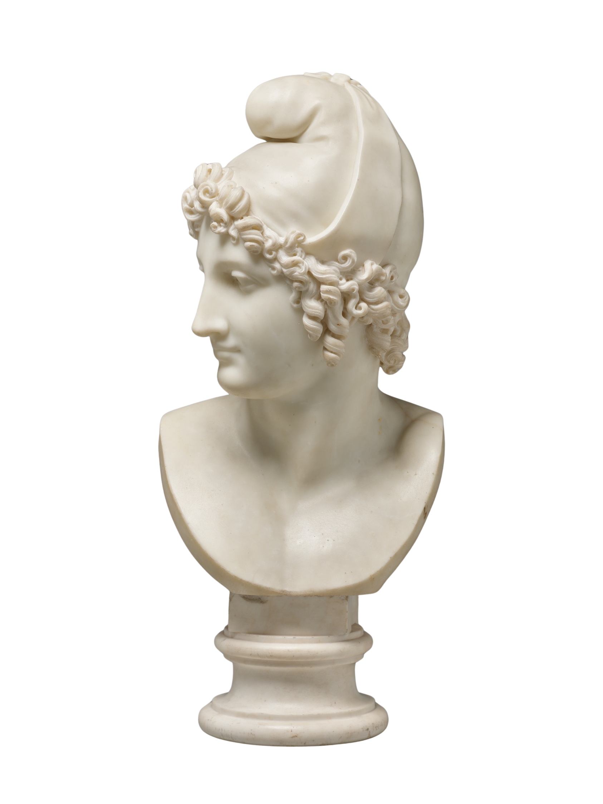

Oudheid en danWelkom bij Oudheid en dan! Het doel van deze website is om de canon van het onderwijs in de
Klassieke Talen uit te breiden. Hierbij hoeft niet per se alleen gekeken te worden naar de
antieke
teksten, maar ook naar receptieteksten uit de Middeleeuwen, Renaissance, en later. De
Oudheid leeft nog steeds, en om te begrijpen wat deze voor ons kan betekenen is het
noodzakelijk te begrijpen hoe die teksten, beelden, vooroordelen, gebruiken, etc. bij ons
terecht zijn gekomen. Wie net als Paris het mooiste wil vinden dat de wereld te bieden
heeft, moet misschien iets meer lezen dan Homerus, Euripides, Vergilius & Ovidius. |
 |
RECEPTIEHier vind je compleet lesmateriaal voor een lessenreeks rondom een receptie-tekst. Vaak gaat hieraan een antieke tekst vooraf. |
TEKSTENHier vind je teksten met vertalingen en aantekeningen. De teksten kun je zo makkelijk implementeren in je eigen lesprogramma. |